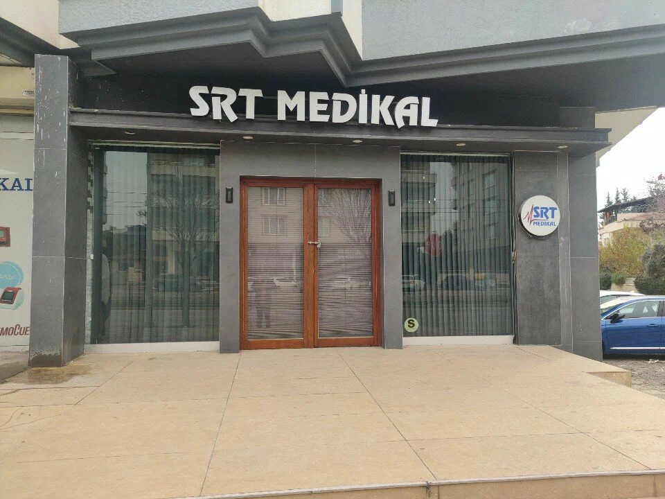

Misyonumuz
Sağlık kuruluşlarının ihtiyaç duyduğu cihazları doğru zamanda temin etmek, güvenilir servis ve danışmanlıkla cihazların kesintisiz çalışmasını sağlamak.

Üç kişilik bir ekiple kurulduk ve sağlık sektöründe güven veren bir çözüm ortağına dönüştük.
Gaziantep, Kahramanmaraş, Malatya, Şanlıurfa ve Kilis'te aktif hizmet vermeye başladık.
11 ilde hizmet ağımızı büyüterek Yozgat, Tokat, Sivas, Kayseri, Niğde ve Nevşehir'e ulaştık.
Pandemi ve deprem gibi zorlu dönemlerde dahi istikrarlı büyümemizi sürdürdük.
Sağlık kuruluşlarının ihtiyaç duyduğu cihazları doğru zamanda temin etmek, güvenilir servis ve danışmanlıkla cihazların kesintisiz çalışmasını sağlamak.
Laboratuvar ve kritik bakım çözümlerinde Türkiye'nin en güvenilir iş ortağı olmak, müşterilerimize tek elden çözümler sunmak.